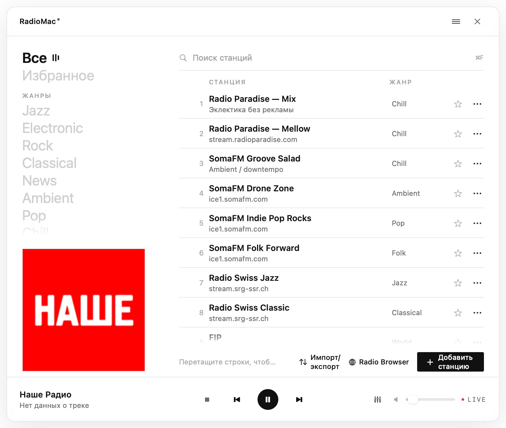
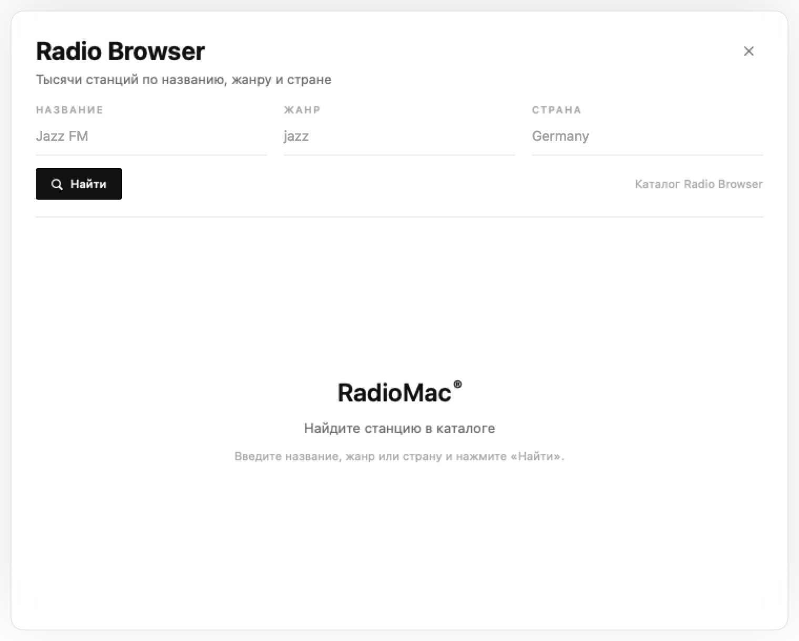
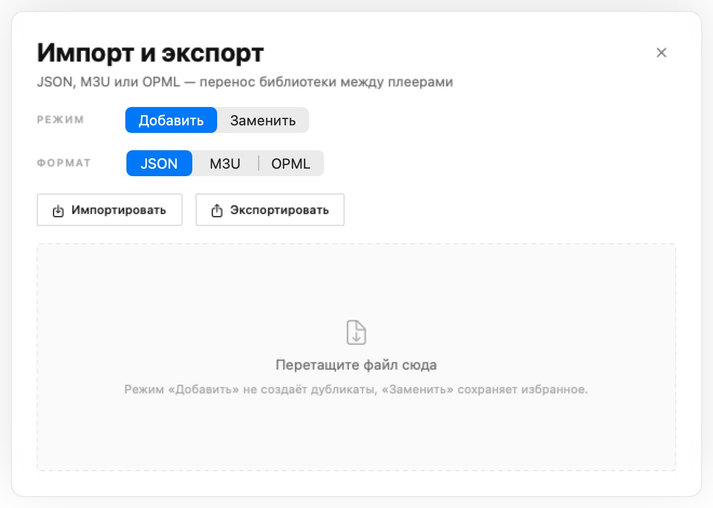
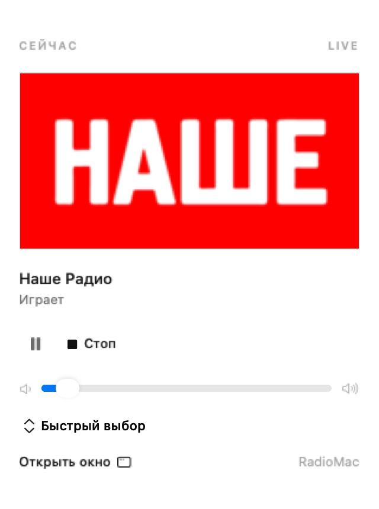
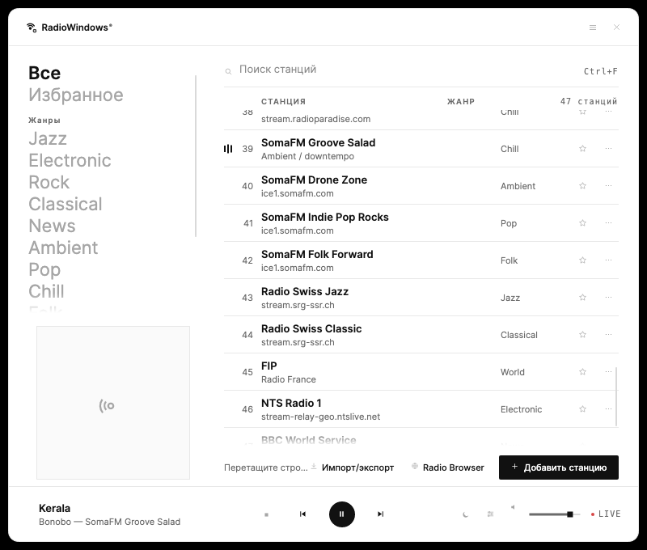
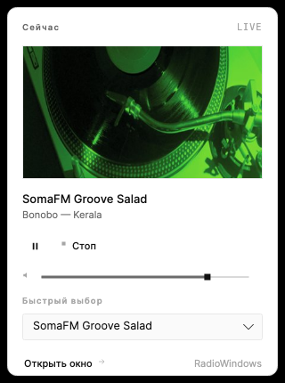

01
Навигация и библиотека
Крупные жанры, «Избранное» и группы в левой колонке. Порядок станций меняется перетаскиванием, состояние сохраняется между запусками.
macOS · меню-бар
47 станций и Radio Browser, живые метаданные, эквалайзер, мини-плеер, виджет и Control Center. Без иконки в Dock и без лишнего шума.
v1.3.1
Исходный код и все релизы — на GitHub.

Возможности
01
Крупные жанры, «Избранное» и группы в левой колонке. Порядок станций меняется перетаскиванием, состояние сохраняется между запусками.
02
Поиск тысяч станций по названию, жанру и стране, превью прямо в каталоге и добавление без дублей по URL или stationuuid.
03
HLS timed metadata, ICY, Icecast, SomaFM и Radio Paradise. Обложка подтягивается из iTunes, а трек уходит в системный Now Playing.
04
Левый клик по иконке открывает поповер с обложкой, треком, play/pause, громкостью и быстрым выбором станции — без основного окна.
05
10 полос, пресеты и своя кривая. Нативный Biquad DSP в audio tap AVPlayer работает для HLS, AAC и MP3, не перезапуская поток.
06
JSON, M3U и OPML, drag-and-drop, режимы «Добавить» и «Заменить». Избранное сохраняется, встроенный каталог не затирается.
07
Виджет macOS 14+ с текущей станцией и play/pause. На macOS 26+ — элемент Control Center. Общее состояние хранится локально без App Group.
08
«Играть станцию», «Пауза» и «Открыть RadioMac» в Shortcuts; URL radiomac://play/<id>, radiomac://pause, radiomac://toggle.
09
Sparkle 2 с EdDSA-подписанным appcast. Светлая, тёмная или системная тема. Песочница, без аккаунтов и телеметрии.
10
15/30/60/90 минут, плавное затухание за 5 секунд, обратный отсчёт в окне и меню-баре, отмена одним нажатием.
11
Настраиваемые play/pause и следующая станция через Carbon работают при скрытом окне; конфликты с системой проверяются.
12
Последние 100 треков со станцией, исполнителем и временем. Поиск, копирование и очистка; всё хранится локально.
13
String Catalog ru/en, VoiceOver-метки, повышенный контраст мелких подписей и поддержка Reduce Motion.
Скриншоты







Клавиатура
| Клавиши | Действие |
|---|---|
| Esc | убрать фокус из поиска, иначе скрыть окно |
| Space | пауза / продолжить |
| ↑ ↓ | двигать выделение |
| Return | играть выделенную станцию |
| 1…9 | сразу включить станцию из списка |
| ⌘F | фокус в поиск |
| ⌘N | новая станция |
Автоматизация
Shortcuts
Команда выбирает станцию из библиотеки и запускает эфир; отдельные команды — «Пауза» и «Открыть RadioMac».
URL
radiomac://play/<id> включает станцию, radiomac://pause ставит паузу, radiomac://toggle переключает play/pause.
Sparkle
Appcast в latest release подписан Ed25519. «Настройки → Обновления» и меню-бар проверяют и устанавливают новую версию.
Установка
RadioMac 1.0.0.dmg — универсальная сборка для Apple Silicon и Intel.
Откройте DMG и перетащите RadioMac в папку Applications. Или установите через PKG.
Иконка появится в меню-баре, окно откроется по клику. Приложение не показывается в Dock, продолжает играть после закрытия окна и обновляется через Sparkle.
Homebrew: brew trust fso13/tap, brew tap fso13/tap,
brew install --cask radiomac.
Требуется macOS 14 или новее. Если Gatekeeper блокирует сборку без нотарификации, выполните
xattr -dr com.apple.quarantine /Applications/RadioMac.app.
Проверить файлы можно по контрольным суммам,
состав сборки — по SBOM.

Windows · трей
Порт RadioMac на .NET 10 и Avalonia: безрамочное окно, трей вместо меню-бара, те же 47 станций, жанры, группы, избранное, Radio Browser, история, будильник и Last.fm. Звук — BASS 2.4, эквалайзер — 10 полос BASS_FX.
Версия 1.1.0
Установщик ставится в профиль пользователя и не требует прав администратора. Контрольные суммы — SHA256SUMS.txt, исходники и все релизы — на GitHub.
Сборка не подписана EV-сертификатом: если SmartScreen предупреждает, нажмите «Подробнее» → «Выполнить в любом случае».


Безопасность
Приложение работает локально, в песочнице macOS, без аккаунтов и телеметрии. Сеть используется только для потоков станций, метаданных и логотипов.